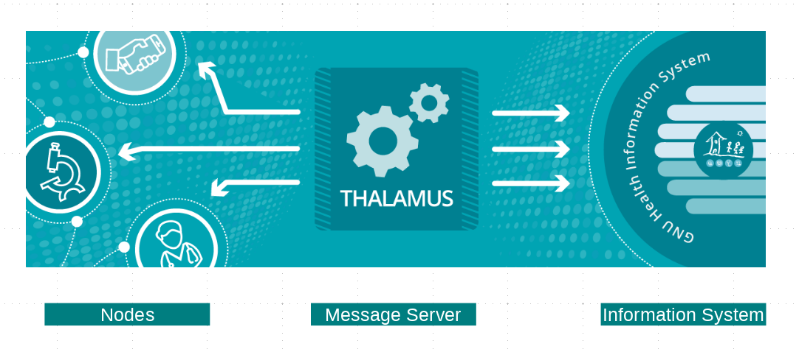

Thalamus
Introduction
Thalamus is the message and authentication server of the GNU Health Federation.


The Thalamus project provides a RESTful API hub to all the GNU Health Federation nodes. The main functions are:
Message server: A concentrator and message relay from and to the participating nodes in the GNU Health Federation and the GNU Health Information System. Some of the participating nodes include the GNU Health HIS, mobile PHR applications, laboratories, research institutions and civil offices.
Authentication Server: Thalamus also serves as an authentication and authorization server to interact with the GNUHealth Information System
In order to communicate to the Health Information System, a node must go through Thalamus. The user/node must provide proper credentials, and after checking for the access level, it will grant access to the resource with the appropriate method.
Installation Instructions
If you want to install Thalamus, or want detailed technical information, refer to the Thalamus documentation: